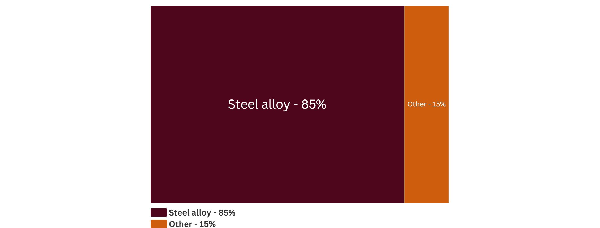
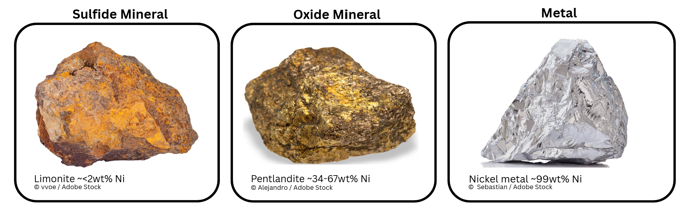

Nickel is a transition metal that is hard, corrosion-resistant and magnetic which makes it an essential alloy in stainless steel. Although pure nickel metal can be found in small quantities, most nickel ore occur as oxide minerals like limonite and sulfide minerals like pentlandite. Evidence of nickel metallurgy goes back to 200 BC in central west Asia. The metal, known as “white copper,” was used to make weapons and coins. Nickel metal was successfully refined from a mineral body in 1775 by Torbern Bergman in Sweden.
Some of the largest nickel mines are in Indonesia and the Philippines. Underground and surface mining techniques are used to acquire nickel ore. The mining method that’s used depends on the ore type which can be broken into lateritic deposits (oxides, clays, silicate) and pentlandite deposits (sulfide minerals) which are usually mined underground. Lateritic deposits occur closer to the surface in tropical climates, so they surface mined. The product of these ores is generally exported as an alloy in stainless steel production. Pentlandite deposits occur deeper in the ground and are mined underground. Some of the largest underground nickel mines have been in Canada and Russia. Pentlandite tend to have higher nickel purities so the product of refining them is used in elective vehicle batteries.
Refining Pentlandite Deposits into Metal
After being recovered from tunnels dug underground, the ore is crushed and milled into powder. From here the fine particles are separated from larger ones in a cyclone. Cyclones use centrifugal force to make heavier particles settle at the bottom so they can be recycled into the milling circuit. Screening and magnetic filtration can be used to separate out finer particles. The finer material is mixed with sulfide collectors like xanthates and dithiophosphates as well as depressants like guar gum to help waste aggregate at the bottom. The liquid is sent to a froth flotation unit that pumps air at the bottom of the tank through the liquid. As the air bubbles through the liquid, nickel minerals froth to the surface forming a metallic froth. This froth is recovered and sent to a thickening unit. A thickener in this process is a cylindrical vat with a stirring rod that filters out the water from the copper rich concentrate synthesized in the froth flotation step. The dewatered concentrate is exported by rail, truck and/or ship to smelters. The smelting facilities dry the concentrate, mix silica in (SiO2). Once the mixture is heated to temperatures exceeding 1300 °C, compressed oxygen is blown through the molten material to burn off iron and sulfur impurities. The product is a ‘nickel-metal matte’ that can have a nickel concentration ranging between 25-40%. The matte is poured hot into molds called casts. The cooled matte is crushed and the sent through a second flotation unit process. The recovered nickel-froth is then heated to produce nickel oxide. Another way to get nickel oxide from the matte is through pressure leaching; the process of forcing sulfuric acid or ammonia through the solid. The nickel oxide is mixed with carbon monoxide to form nickel carbonyl gas. Increasing the temperature between 180-250 °C forces carbon monoxide to gas off to leave solid nickel metal.
Refining Lateritic Deposits into Metal
Laterite deposits can have a water content up to 35 wt % along with an iron content of 10-50 wt % iron. This ore is crushed, dried in a rotary kiln and then calcined at approximately 900 °C. Calcination removes the embedded water and reduces the iron. This process yields ferronickel or nickel-pig iron. Because laterite ores have naturally high iron content, this process is ideal for the stainless steel industry as the iron does not need to be removed before it’s exported.
To remove the nickel from the iron, the crushed ore is not sent to a kiln but rather an autoclave which is a heated, pressure vessel. At 250 °C and 40 bar, sulfuric acid is mixed, dissolving the nickel and cobalt, separating from the iron that remains solid. The nickel-rich acid solution is mixed with lime (Ca(OH)2 which forces a precipitate to form. This precipitate is further refined into nickel sulfate (NiSO4) by mixing in more sulfuric acid and passing the liquid into solvent extraction units. Solvent extraction units use an immiscible liquid solvent to selectively separate out a material of solution. The liquid is filtered to give pure nickel concentrate. This product is critical to electric vehicle battery manufacturing.
What is nickel used for?

Figure 1: Industrial uses of nickle. Data source: USGS National Minerals Information Center, 2025.
What do some nickel minerals look like?

Figure 2: Different types of nickel containing materials.
Where are nickel mineral deposits?

Figure 3: Global nickel reserves as reported by the USGS. Data is from https://mrdata.usgs.gov/general/map-global.html
Where is nickel mined?
Scroll with your mouse or touchpad over the tagged locations on the map to zoom in/out.
Who imports nickel?
Click on the blue bubbles to see where gold is imported from.